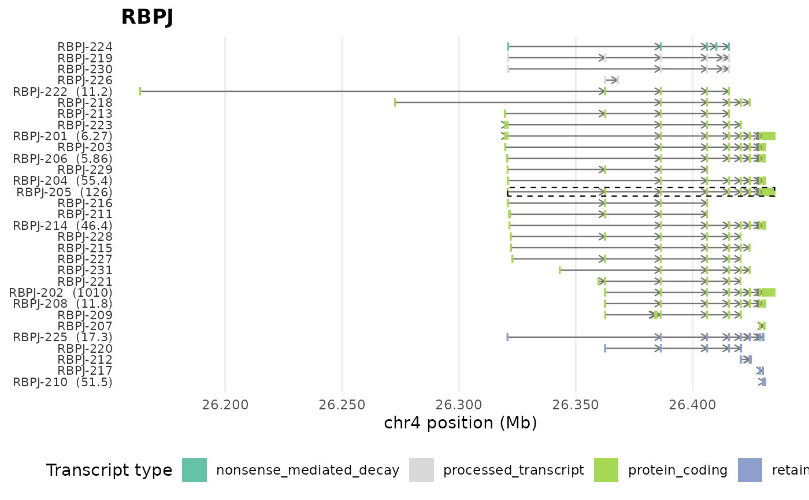
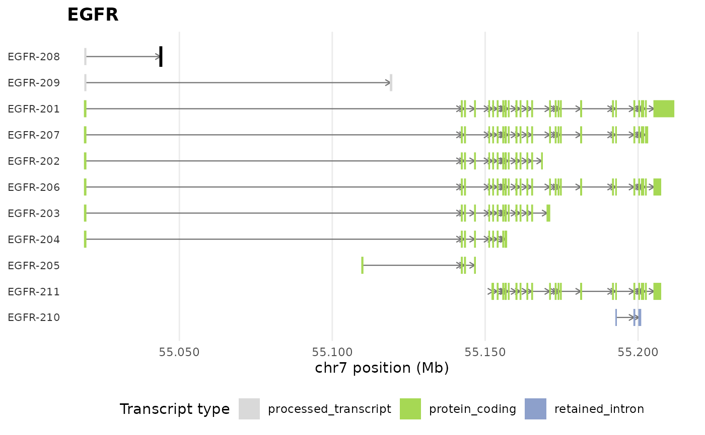
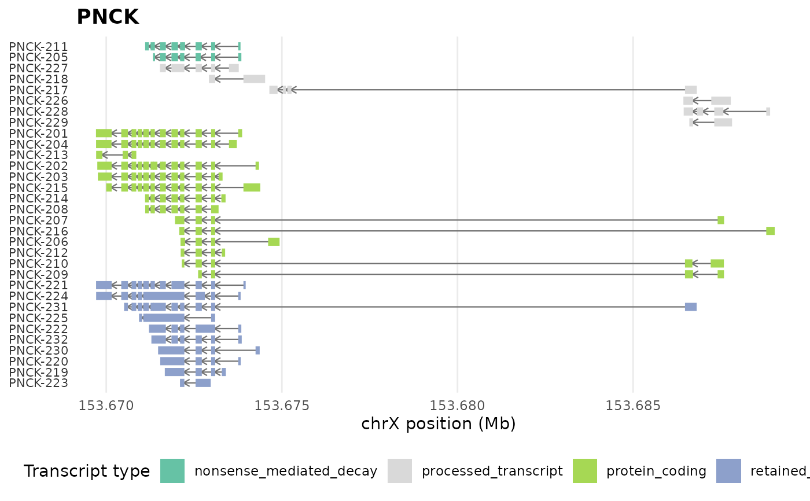

Plot the Genomic Context of a Gene's Isoforms
Source:R/plot_genomic_context.R
plot_genomic_context.RdDraws the exon-intron structure of every annotated transcript of one or
more genes along the genome, one row per transcript, coloured by
transcript type, with introns as lines carrying strand arrows. This is a
pure ggplot2 implementation reading the exon table of the annotation
directory, so it needs no genome packages. The IsoformicExperiment
method can annotate each transcript with its mean expression and
highlight differentially expressed isoforms.
The data frame method takes an exon table as returned by exon_table()
or prepare_exon_annotation() (columns transcript_id, start_pos,
end_pos, and optionally transcript_name, transcript_type,
gene_name, seqid, strand). plot_tx_context() is kept as an alias
of that method accepting the legacy column names tx_id, exon_left
and exon_right.
Usage
plot_genomic_context(
self,
gene_name = NULL,
assay = "abundance",
highlight_de = TRUE,
color_palette = NULL,
expression = NULL,
highlight = NULL,
highlight_poison_exons = TRUE,
upstream_offset = 0,
downstream_offset = 0,
exon_height = 0.6,
ncol = 1L,
...
)
plot_tx_context(exon_table, ...)Arguments
- self
An IsoformicExperiment or an exon table.
- gene_name
Character vector of gene names or IDs.
- assay
Name of the assay used to label transcripts with their mean expression;
NULLdisables the labels.- highlight_de
Logical, outline isoforms flagged as significant in the stored transcript-level results.
- color_palette
Named colour vector per transcript type; defaults to the object's palette or
tx_type_palette().- expression
Optional named numeric vector (by transcript ID) used to label transcripts (data frame method).
- highlight
Optional character vector of transcript IDs or names to outline (data frame method).
- highlight_poison_exons
Logical, outline exons found only in unproductive isoforms of the gene (see
poison_exons()).- upstream_offset, downstream_offset
Extra genomic span (bp) shown before and after the gene.
- exon_height
Height of exon boxes (0-1).
- ncol
Number of facet columns when several genes are plotted.
- ...
Passed on to methods.
- exon_table
Legacy argument of
plot_tx_context().
Examples
iso <- example_isoformic()
plot_genomic_context(iso, gene_name = "RBPJ")
#> Warning: ! 1 transcript has a sequence length differing from the exon length; its ORF is
#> skipped.

plot_genomic_context(iso, gene_name = "EGFR", assay = NULL, highlight_de = FALSE)

# Table-based
plot_genomic_context(exon_table(iso, "PNCK"))
